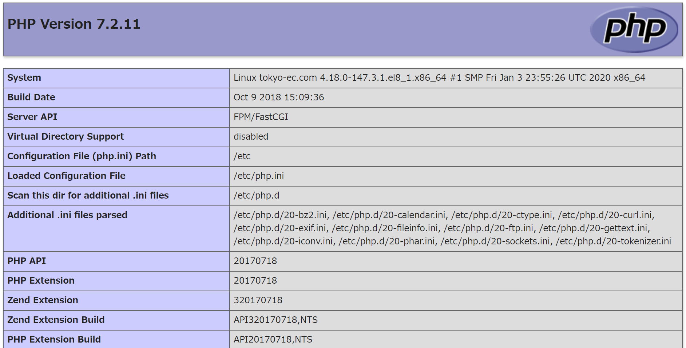

- phpのインストール
# dnf -y install php php-pdo php-mysqlnd
メタデータの期限切れの最終確認: 0:28:05 時間前の 2020年02月06日 05時14分25秒 に実施しました。
依存関係が解決しました。
=============================================================================================================================================================
パッケージ アーキテクチャー バージョン リポジトリー サイズ
=============================================================================================================================================================
インストール:
php x86_64 7.2.11-2.module_el8.1.0+209+03b9a8ff AppStream 1.5 M
php-mysqlnd x86_64 7.2.11-2.module_el8.1.0+209+03b9a8ff AppStream 190 k
php-pdo x86_64 7.2.11-2.module_el8.1.0+209+03b9a8ff AppStream 122 k
依存関係のインストール:
nginx-filesystem noarch 1:1.14.1-9.module_el8.0.0+184+e34fea82 AppStream 24 k
php-cli x86_64 7.2.11-2.module_el8.1.0+209+03b9a8ff AppStream 3.1 M
php-common x86_64 7.2.11-2.module_el8.1.0+209+03b9a8ff AppStream 655 k
弱い依存関係のインストール:
php-fpm x86_64 7.2.11-2.module_el8.1.0+209+03b9a8ff AppStream 1.6 M
モジュールストリームの有効化:
nginx 1.14
php 7.2
トランザクションの概要
=============================================================================================================================================================
インストール 7 パッケージ
ダウンロードサイズの合計: 7.2 M
インストール済みのサイズ: 29 M
パッケージのダウンロード:
(1/7): nginx-filesystem-1.14.1-9.module_el8.0.0+184+e34fea82.noarch.rpm 489 kB/s | 24 kB 00:00
(2/7): php-common-7.2.11-2.module_el8.1.0+209+03b9a8ff.x86_64.rpm 8.8 MB/s | 655 kB 00:00
(3/7): php-7.2.11-2.module_el8.1.0+209+03b9a8ff.x86_64.rpm 10 MB/s | 1.5 MB 00:00
(4/7): php-mysqlnd-7.2.11-2.module_el8.1.0+209+03b9a8ff.x86_64.rpm 3.3 MB/s | 190 kB 00:00
(5/7): php-fpm-7.2.11-2.module_el8.1.0+209+03b9a8ff.x86_64.rpm 18 MB/s | 1.6 MB 00:00
(6/7): php-pdo-7.2.11-2.module_el8.1.0+209+03b9a8ff.x86_64.rpm 6.0 MB/s | 122 kB 00:00
(7/7): php-cli-7.2.11-2.module_el8.1.0+209+03b9a8ff.x86_64.rpm 13 MB/s | 3.1 MB 00:00
-------------------------------------------------------------------------------------------------------------------------------------------------------------
合計 9.1 MB/s | 7.2 MB 00:00
トランザクションの確認を実行中
トランザクションの確認に成功しました。
トランザクションのテストを実行中
トランザクションのテストに成功しました。
トランザクションを実行中
準備 : 1/1
インストール中 : php-common-7.2.11-2.module_el8.1.0+209+03b9a8ff.x86_64 1/7
インストール中 : php-cli-7.2.11-2.module_el8.1.0+209+03b9a8ff.x86_64 2/7
インストール中 : php-pdo-7.2.11-2.module_el8.1.0+209+03b9a8ff.x86_64 3/7
scriptletの実行中: nginx-filesystem-1:1.14.1-9.module_el8.0.0+184+e34fea82.noarch 4/7
インストール中 : nginx-filesystem-1:1.14.1-9.module_el8.0.0+184+e34fea82.noarch 4/7
インストール中 : php-fpm-7.2.11-2.module_el8.1.0+209+03b9a8ff.x86_64 5/7
scriptletの実行中: php-fpm-7.2.11-2.module_el8.1.0+209+03b9a8ff.x86_64 5/7
インストール中 : php-7.2.11-2.module_el8.1.0+209+03b9a8ff.x86_64 6/7
インストール中 : php-mysqlnd-7.2.11-2.module_el8.1.0+209+03b9a8ff.x86_64 7/7
scriptletの実行中: php-mysqlnd-7.2.11-2.module_el8.1.0+209+03b9a8ff.x86_64 7/7
scriptletの実行中: php-fpm-7.2.11-2.module_el8.1.0+209+03b9a8ff.x86_64 7/7
検証 : nginx-filesystem-1:1.14.1-9.module_el8.0.0+184+e34fea82.noarch 1/7
検証 : php-7.2.11-2.module_el8.1.0+209+03b9a8ff.x86_64 2/7
検証 : php-cli-7.2.11-2.module_el8.1.0+209+03b9a8ff.x86_64 3/7
検証 : php-common-7.2.11-2.module_el8.1.0+209+03b9a8ff.x86_64 4/7
検証 : php-fpm-7.2.11-2.module_el8.1.0+209+03b9a8ff.x86_64 5/7
検証 : php-mysqlnd-7.2.11-2.module_el8.1.0+209+03b9a8ff.x86_64 6/7
検証 : php-pdo-7.2.11-2.module_el8.1.0+209+03b9a8ff.x86_64 7/7
インストール済み:
php-7.2.11-2.module_el8.1.0+209+03b9a8ff.x86_64 php-mysqlnd-7.2.11-2.module_el8.1.0+209+03b9a8ff.x86_64
php-pdo-7.2.11-2.module_el8.1.0+209+03b9a8ff.x86_64 php-fpm-7.2.11-2.module_el8.1.0+209+03b9a8ff.x86_64
nginx-filesystem-1:1.14.1-9.module_el8.0.0+184+e34fea82.noarch php-cli-7.2.11-2.module_el8.1.0+209+03b9a8ff.x86_64
php-common-7.2.11-2.module_el8.1.0+209+03b9a8ff.x86_64
完了しました!
- phpのバージョン確認
# php -v
PHP 7.2.11 (cli) (built: Oct 9 2018 15:09:36) ( NTS )
Copyright (c) 1997-2018 The PHP Group
Zend Engine v3.2.0, Copyright (c) 1998-2018 Zend Technologies
- phpの設定情報をブラウザに表示するためのコードを記述
# cd /var/www/html
# vim phpinfo.php
--------------以下の内容をコピー&ペーストします。-------
<?php
phpinfo();
---------------[Esc + :wq]で保存終了します。----------
# systemctl restart httpd
- ブラウザを起動して、設定情報を確認
http://192.168.56.28/phpinfo.php
